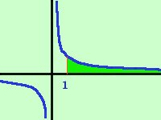

|
Calcolare l'area della regione di piano compresa fra la curva y=1/(x2) e l'asse delle x da 1 a piu' infinito  Facciamo la rappresentazione grafica dell'area cercata ricordando che la funzione y=1/(x)2 e' come l'iperbole dell'esercizio precedente ma con i rami che si avvicinano piu' rapidamente agli assi L'area cercata e' quella evidenziata; Sarebbe:
L'area compresa nella regione in questo caso e' finita e vale un'unita' quadrata del piano |